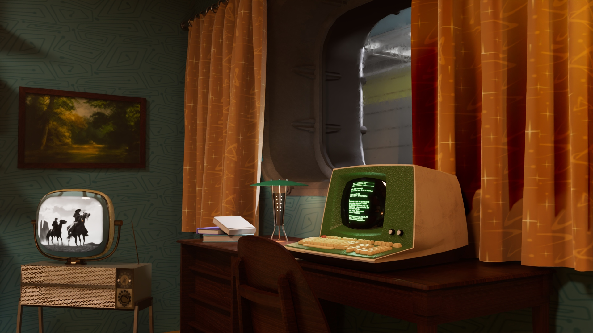

Midcentury Fallout Room

This project explores motion, pacing, and narrative through a minimal interactive video experience. The focus was on clarity, rhythm, and visual hierarchy.
Tools used include After Effects, Premiere Pro, and custom web layout techniques.